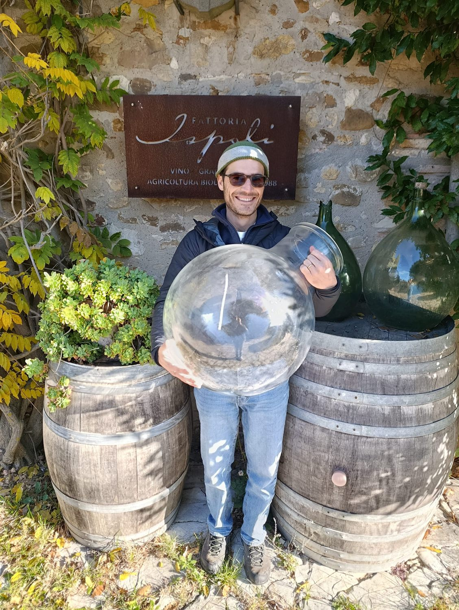

Archivio
I Messaggi
Ogni Messaggio è un'annata, una vigna, un vignaiolo. Il vino viene vinificato secondo i protocolli dell'azienda ospite e affinato per un anno in un'ampolla di vetro da 60 litri, poi imbottigliato senza filtrazione in magnum: una resta alla cantina ospitante, le altre vengono custodite dall'Associazione fino all'asta benefica.
Il tempo che scorre
Messaggi in corso
Dal riempimento dell'ampolla all'evento conclusivo passano almeno quattro anni. Qui si vede a che punto è ciascun Messaggio.
Come si sceglie una vigna
Un'annata che è andata nel migliore dei modi
La selezione parte dal vignaiolo prima ancora che dal vino: piccoli produttori artigianali con un interesse reale a indagare i propri vigneti. Tra questi si individua chi, in una precisa annata, ha prodotto un vino da singolo vigneto particolarmente riuscito.
L'ampolla viaggia in automobile: il raggio d'azione comprende tutta l'Italia e i paesi limitrofi raggiungibili su strada. Cambia il luogo, ma non il principio.
